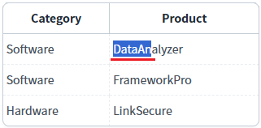
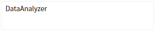
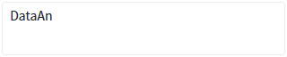
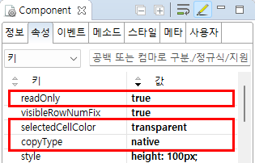

GridView의 'copyType' 속성을 사용하여, 셀 데이터 중 일부 문자열만 복사(Ctrl+C)를 하는 예제입니다. 기본 설정은 데이터가 셀 단위로 복사되며, 설정을 통해 문자 단위로 복사할 수 있습니다.
문자열은 마우스를 드래그하여 선택합니다.
이 기능은 GridView가 읽기전용(ReadOnly)으로 설정되었을 때 Cell의 데이터 중 일부 문자열을 복사하기 위해 만들어졌습니다.
(기본 설정) 데이터 복사(Ctrl+C)를 셀 단위로 설정
데이터 복사(Ctrl+C)를 문자 단위로 설정
이 예제는 문자열 선택 범위가 잘 노출될 수 있도록 GridView의 설정 중 Cell 선택 시 배경색을 투명(selectedCellColor="transparent")으로 변경하였습니다.
예제 영역 '(기본설정) 연결된 DataList의 값으로 복사'에 구성된 GridView에서 테스트합니다.1
STEP 1: GridView에서 Cell의 문자열을 선택하고 복사합니다.
Cell의 데이터 중 일부 문자열을 마우스로 드래그하여 선택합니다. 예를 들어 셀의 데이터가 'DataAnalyzer'라면 'DataAn'까지 마우스로 드래그하여 선택합니다.
선택된 문자열을 복사(Ctrl+C)합니다.
Image 1.브라우저(Chrome) 실행 예시 - 문자열 선택 예시

2
STEP 2: 문자열을 붙여넣기(Ctrl+V) 합니다.
예제 영역 '테스트 결과 확인을 위한 Textarea'에 구성된 TextArea에 문자열을 붙여넣기(Ctrl+V)합니다.Image 2.브라우저(Chrome) 실행 예시 - 테스트 결과 확인을 위한 Textarea
3
STEP 3: 실행 결과를 확인합니다.
Cell의 전체 Data인 'DataAnalyzer'가 붙여넣기됩니다.
Image 3.브라우저(Chrome) 실행 예시 - 붙여넣기 결과

1
STEP 1: GridView에서 Cell의 문자열을 마우스로 드래그하여 선택/복사합니다.
예제 영역 '셀에 출력된 값으로 복사'에 구성된 GridView에서 테스트합니다.Cell의 데이터 중 일부 문자열을 마우스로 드래그하여 선택합니다. 예를 들어 셀의 데이터가 'DataAnalyzer'라면 'DataAn'까지 마우스로 드래그하여 선택합니다.
선택된 문자열을 복사(Ctrl+C)합니다.
Image 4.브라우저(Chrome) 실행 예시 - 문자열 선택 예시
2
STEP 2: 문자열을 붙여넣기(Ctrl+V) 합니다.
예제 영역 '테스트 결과 확인을 위한 Textarea'에 구성된 TextArea에 문자열을 붙여넣기(Ctrl+V)합니다.Image 5.브라우저(Chrome) 실행 예시 - 테스트 결과 확인을 위한 Textarea
3
STEP 3: 실행 결과를 확인합니다.
Cell의 전체 Data인 'DataAn'가 붙여넣기됩니다.
Image 6.브라우저(Chrome) 실행 예시 - 붙여넣기 결과

DataList 생성 및 연결은 생략되었습니다.
1
GridView의 속성을 정의합니다.
[필수] copyType="native"
복사(Ctrl+C)시 선택된 문자열만 복사합니다.
"default": (기본 값) 데이터 복사 시 focus된 cell들 전체를 복사한다. 여러 cell을 복사한 경우 붙여넣을때도 여러 cell에 걸쳐 붙여넣기가 됩니다.
"native" : 하나의 cell에서 일부의 데이터만 복사하고 싶을 때 사용한다. 여러 cell의 내용 일부를 복사할수는 있으나 붙여넣기는 항상 1개의 cell에만 붙여넣기됩니다.
[선택] readOnly="true"
GridView 설정을 읽기 전용으로 설정합니다.
[선택] selectedCellColor="transparent"
선택된 Cell의 배경색을 투명으로 설정합니다.
Image 7.웹스퀘어 스튜디오의 Component View - 속성 설정 예시

Example 1.Source
<!-- gridView 의 소스 본문 예시 --> <w2:gridView copyType="native" readOnly="true" selectedCellColor="transparent" dataList="data:dlt_books"> <!-- 중략 --> </w2:gridView>
copyType